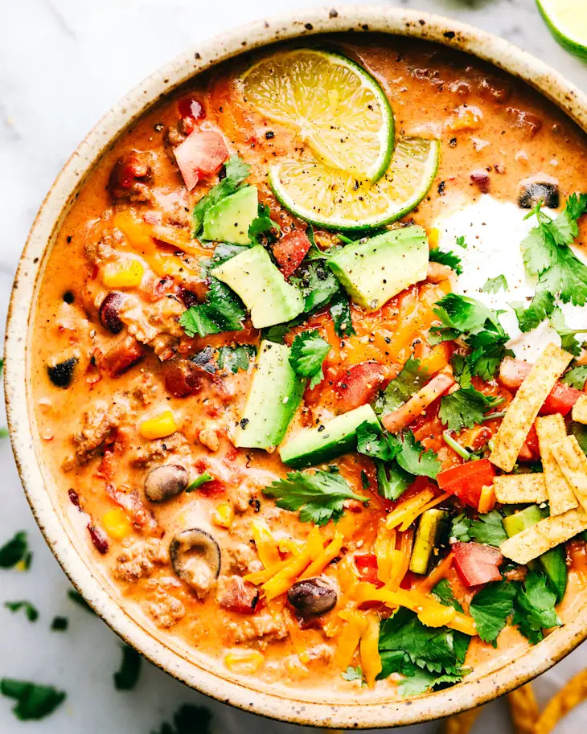

Cheesy Tex-Mex Taco Soup
Ingredients
Soup Base
- 1 lb ground beef, browned and drained
- 1 yellow onion, chopped
- 1 can chili beans, undrained
- 1 can sweet corn, drained
- 6 oz tomato paste
- 1 can mild Rotel
- 1 can mild diced green chiles
- 1 packet taco seasoning
- 3 cups beef broth
Cheese Add-Ins
- 16 oz Velveeta, cubed
- 4 oz cream cheese, softened
Toppings (Optional)
- Lime wedges
- Avocado slices
- Tortilla strips
- Queso fresco or cotija cheese, crumbled
- Fresh cilantro, chopped (optional)
Instructions
- In a large pot or Dutch oven over medium heat, brown the ground beef, breaking it into small pieces as it cooks. Drain excess fat.
- Add the chopped onion and cook for 3–4 minutes, until softened and fragrant.
- Stir in the chili beans (with their liquid), corn, tomato paste, Rotel, green chiles, taco seasoning, and beef broth. Mix well to combine.
- Bring the mixture to a gentle simmer. Cook for about 10 minutes, stirring occasionally, to let the flavors come together.
- Reduce heat to low. Add the cubed Velveeta and cream cheese.
- Stir frequently until all of the cheese is fully melted and the soup is smooth and creamy, 10–15 minutes. Do not let it boil.
- Taste and adjust seasoning with salt, pepper, or a squeeze of lime if desired.
- Ladle into bowls and top with lime, avocado, tortilla strips, queso fresco or cotija, and cilantro.
Notes
- For a thicker soup, stir in a handful of crushed tortilla chips and let them soften in the pot before serving.
- To make it spicier, use hot Rotel, add a diced jalapeño with the onions, or finish with your favorite hot sauce.
- You can substitute ground turkey or chicken for the beef if you prefer a lighter option.
- This soup reheats and freezes well. Cool completely, then store in airtight containers, leaving room at the top for expansion.
Nutritional Information
Serving Size: ~1½ cups (about 1/6 of recipe, without toppings)
Calories: ~480
Fat: ~31 g
Carbohydrates: ~23 g
Protein: ~27 g